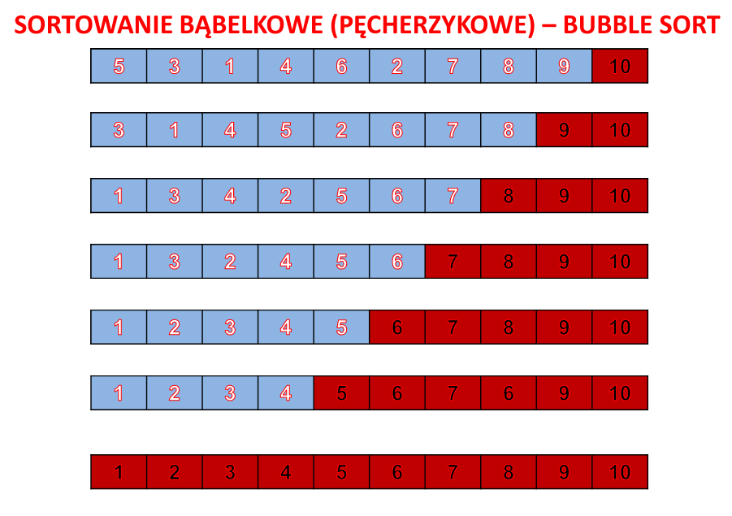
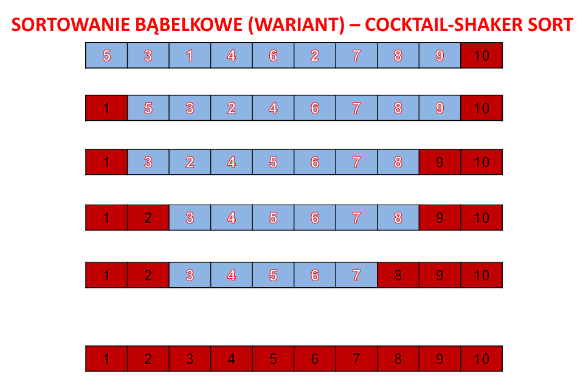

Opis krótki:
W każdym przejściu pętli wewnętrznej porównywane są ze sobą dwie kolejne wartości i w razie potrzeby są zamieniane miejscami. W jednym cyklu pętli wewnętrznej, największa liczba (tak jak bąbelki w napoju gazowanym) w zbiorze będzie się przemieszczała na ostatnią pozycję. W ten sposób otrzymujemy podzbiór częściowo już posortowany. Czynności te powtarzamy dla zbioru pominiętego o elementy już poukładane.
Algorytm ma złożoność O(n²).
Opis szczegółowy:
Założenie:
Sortowane elementy/obiekty są dostępne w tablicy jednowymiarowej liczącej N pozycji. Poza kończeniu sortowania elementy te nadal znajdują się w tej samej tablicy, lecz w odpowiedniej kolejności.
Algorytm:
Określ początkowy status/stan wszystkich elementów jako „nieposortowany”. Dopóki wszystkie elementy nie osiągną statusu/stanu „posortowany”, postępuj następująco:
-
Ustaw się przy pierwszym „nieposortowanym” elemencie (uczyń ten element elementem „bieżącym”);
-
Dopóki nie dotrzesz do ostatniego „nieposortowanego” elementu, postępuj następująco:
-
Jeśli element „bieżący” jest większy od następnego elementu, to zamień te dwa elementy miejscami;
-
Przemieść się do następnego elementu (uczyń go elementem „bieżącym”).
-
-
Nadaj ostatniemu „nieposortowanemu” elementowi status/stan „posortowany”.

